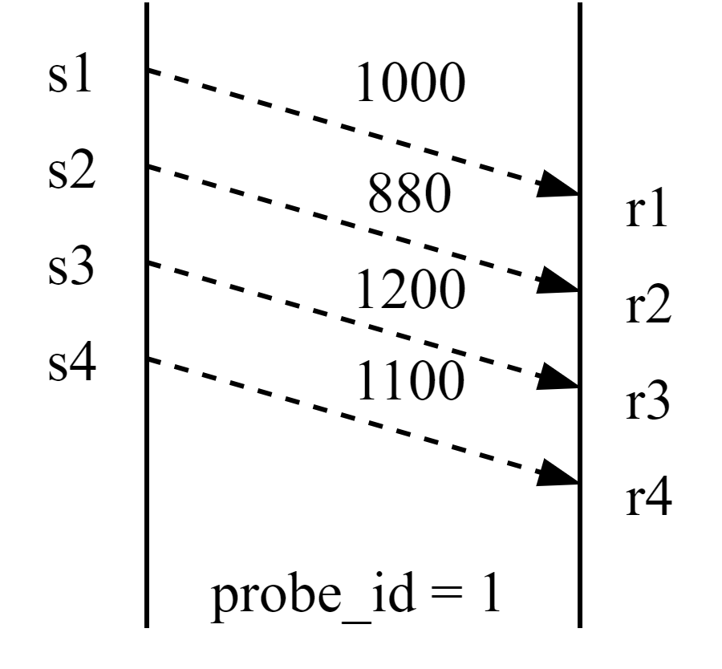

GCC类似TCP算法中的AIMD，能够迅速反应带宽衰减，网络处于过载状态；带宽上升时，webrtc在前期乘性增加，逼近收敛加性增加，收敛时间比较长，影响数据发送效率。因此webrtc在起始阶段采用类似于TCP慢启动的probe模块，快速探测链路容量上限。

发送端发送探测包，同时记录发送时间戳和探测包大小、序列号、探测组id，接收端隔一段时间反馈数据包到达时间、接受包大小。根据发送端和接收端接受的字节数、时间间隔便可以计算接收和发送速度，两者最小值可以认为是网络带宽。
ProbeController负责生成ProbeClusterConfig，交给BitrateProber生成探测簇。ProbeBitrateEstimator是通过cc-feedback的报文得到探测包的发送情况，从而预估码率。
探测流程 什么时候进行探测 综上分析，在webrtc中，主动探测随时都有可能发生，初始的时候肯定会进行主动探测，以更为迅速的确定初始带宽；如果启用alr probing，则可以启动5s为单位的周期性探测；另外在带宽骤降的时候以及带宽骤升的时候都要进行主动探测，其主要目的都是为了尽快的确定真实的带宽到底为多少。
开始阶段指数级探测 ProbeController::InitiateExponentialProbing1 2 3 4 5 6 7 8 9 10 11 12 13 14 15 16 17 18 std::vector<ProbeClusterConfig> ProbeController::InitiateExponentialProbing ( Timestamp at_time) RTC_DCHECK (network_available_); RTC_DCHECK (state_ == State::kInit); RTC_DCHECK_GT (start_bitrate_, DataRate::Zero ()); std::vector<DataRate> probes = {config_.first_exponential_probe_scale * start_bitrate_}; if (config_.second_exponential_probe_scale && config_.second_exponential_probe_scale.GetOptional ().value () > 0 ) { probes.push_back (config_.second_exponential_probe_scale.Value () * start_bitrate_); } return InitiateProbing (at_time, probes, true ); }
InitiateProbing，初始化一次探测 1 2 3 4 5 6 7 8 9 10 11 12 13 14 15 16 17 18 19 20 21 22 23 24 25 26 27 28 29 30 31 32 33 34 35 36 37 38 39 40 41 42 43 44 45 46 47 48 49 50 51 52 53 54 55 56 57 58 59 60 61 62 63 64 65 66 67 68 69 70 71 72 73 74 75 76 77 78 79 80 81 82 83 84 85 86 87 88 89 90 91 92 93 94 95 96 97 98 99 100 std::vector<ProbeClusterConfig> ProbeController::InitiateProbing ( Timestamp now, std::vector<DataRate> bitrates_to_probe, bool probe_further) if (config_.skip_if_estimate_larger_than_fraction_of_max > 0 ) { DataRate network_estimate = network_estimate_ ? network_estimate_->link_capacity_upper : DataRate::PlusInfinity (); DataRate max_probe_rate = max_total_allocated_bitrate_.IsZero () ? max_bitrate_ : std::min (max_total_allocated_bitrate_, max_bitrate_); if (std::min (network_estimate, estimated_bitrate_) > config_.skip_if_estimate_larger_than_fraction_of_max * max_probe_rate) { state_ = State::kProbingComplete; min_bitrate_to_probe_further_ = DataRate::PlusInfinity (); return {}; } } DataRate max_probe_bitrate = max_bitrate_; if (max_total_allocated_bitrate_ > DataRate::Zero ()) { max_probe_bitrate = std::min (max_probe_bitrate, max_total_allocated_bitrate_ * 2 ); } DataRate estimate_capped_bitrate = DataRate::PlusInfinity (); switch (bandwidth_limited_cause_) { case BandwidthLimitedCause::kRttBasedBackOffHighRtt: case BandwidthLimitedCause::kDelayBasedLimitedDelayIncreased: case BandwidthLimitedCause::kLossLimitedBwe: RTC_LOG (LS_INFO) << "Not sending probe in bandwidth limited state." ; return {}; case BandwidthLimitedCause::kLossLimitedBweIncreasing: estimate_capped_bitrate = std::min (max_probe_bitrate, estimated_bitrate_ * config_.loss_limited_probe_scale); break ; case BandwidthLimitedCause::kDelayBasedLimited: break ; default : break ; } if (config_.network_state_estimate_probing_interval->IsFinite () && network_estimate_ && network_estimate_->link_capacity_upper.IsFinite ()) { if (network_estimate_->link_capacity_upper.IsZero ()) { RTC_LOG (LS_INFO) << "Not sending probe, Network state estimate is zero" ; return {}; } estimate_capped_bitrate = std::min ( {estimate_capped_bitrate, max_probe_bitrate, std::max (estimated_bitrate_, network_estimate_->link_capacity_upper * config_.network_state_probe_scale)}); } std::vector<ProbeClusterConfig> pending_probes; for (DataRate bitrate : bitrates_to_probe) { RTC_DCHECK (!bitrate.IsZero ()); bitrate = std::min (bitrate, estimate_capped_bitrate); if (bitrate > max_probe_bitrate) { bitrate = max_probe_bitrate; probe_further = false ; } ProbeClusterConfig config; config.at_time = now; config.target_data_rate = bitrate; if (network_estimate_ && config_.network_state_estimate_probing_interval->IsFinite ()) { config.target_duration = config_.network_state_probe_duration; } else { config.target_duration = config_.min_probe_duration; } config.target_probe_count = config_.min_probe_packets_sent; config.id = next_probe_cluster_id_; next_probe_cluster_id_++; MaybeLogProbeClusterCreated (event_log_, config); pending_probes.push_back (config); } time_last_probing_initiated_ = now; if (probe_further) { state_ = State::kWaitingForProbingResult; min_bitrate_to_probe_further_ = std::min (estimate_capped_bitrate, (*(bitrates_to_probe.end () - 1 ))) * config_.further_probe_threshold; } else { state_ = State::kProbingComplete; min_bitrate_to_probe_further_ = DataRate::PlusInfinity (); } return pending_probes; }
生成的ProbeClusterConfig作用到pacer模块，在RtpTransportControllerSend::PostUpdates函数进行处理。
目标码率触发探测 ProbeController::SetBitrates
GoogCcNetworkController::OnTargetRateConstraints
1 2 3 4 5 6 7 8 9 10 11 12 13 14 15 16 17 18 19 20 21 22 23 24 25 26 27 28 29 30 31 32 33 34 35 36 37 38 std::vector<ProbeClusterConfig> ProbeController::SetBitrates ( DataRate min_bitrate, DataRate start_bitrate, DataRate max_bitrate, Timestamp at_time) if (start_bitrate > DataRate::Zero ()) { start_bitrate_ = start_bitrate; estimated_bitrate_ = start_bitrate; } else if (start_bitrate_.IsZero ()) { start_bitrate_ = min_bitrate; } DataRate old_max_bitrate = max_bitrate_; max_bitrate_ = max_bitrate.IsFinite () ? max_bitrate : kDefaultMaxProbingBitrate; switch (state_) { case State::kInit: if (network_available_) return InitiateExponentialProbing (at_time); break ; case State::kWaitingForProbingResult: break ; case State::kProbingComplete: if (!estimated_bitrate_.IsZero () && old_max_bitrate < max_bitrate_ && estimated_bitrate_ < max_bitrate_) { return InitiateProbing (at_time, {max_bitrate_}, false ); } break ; } return std::vector <ProbeClusterConfig>(); }
最大需求带宽更新 ProbeController::OnMaxTotalAllocatedBitrate
1 2 3 4 5 6 7 8 9 10 11 12 13 14 15 16 17 18 19 20 21 22 23 24 25 26 27 28 29 30 31 32 33 34 35 36 37 38 std::vector<ProbeClusterConfig> ProbeController::OnMaxTotalAllocatedBitrate ( DataRate max_total_allocated_bitrate, Timestamp at_time) const bool in_alr = alr_start_time_.has_value (); const bool allow_allocation_probe = in_alr; if (config_.probe_on_max_allocated_bitrate_change && state_ == State::kProbingComplete && max_total_allocated_bitrate != max_total_allocated_bitrate_ && estimated_bitrate_ < max_bitrate_ && estimated_bitrate_ < max_total_allocated_bitrate && allow_allocation_probe) { max_total_allocated_bitrate_ = max_total_allocated_bitrate; if (!config_.first_allocation_probe_scale) return std::vector <ProbeClusterConfig>(); DataRate first_probe_rate = max_total_allocated_bitrate * config_.first_allocation_probe_scale.Value (); DataRate probe_cap = config_.allocation_probe_max.Get (); first_probe_rate = std::min (first_probe_rate, probe_cap); std::vector<DataRate> probes = {first_probe_rate}; if (config_.second_allocation_probe_scale) { DataRate second_probe_rate = max_total_allocated_bitrate * config_.second_allocation_probe_scale.Value (); second_probe_rate = std::min (second_probe_rate, probe_cap); if (second_probe_rate > first_probe_rate) probes.push_back (second_probe_rate); } return InitiateProbing (at_time, probes, config_.allocation_allow_further_probing.Get ()); } max_total_allocated_bitrate_ = max_total_allocated_bitrate; return std::vector <ProbeClusterConfig>(); }
网络中断/恢复 ProbeController::OnNetworkAvailability
GoogCcNetworkController::OnNetworkAvailability
1 2 3 4 5 6 7 8 9 10 11 12 13 std::vector<ProbeClusterConfig> ProbeController::OnNetworkAvailability ( NetworkAvailability msg) network_available_ = msg.network_available; if (!network_available_ && state_ == State::kWaitingForProbingResult) { state_ = State::kProbingComplete; min_bitrate_to_probe_further_ = DataRate::PlusInfinity (); } if (network_available_ && state_ == State::kInit && !start_bitrate_.IsZero ()) return InitiateExponentialProbing (msg.at_time); return std::vector <ProbeClusterConfig>(); }
设置估计的码率 ProbeController::SetEstimatedBitrate
乘性探测：探测码率大于设置目标值的70%就继续探测，直到小于这个值，说明链路带宽在这次探测的附近。
如果设置的估计码率超过上次最后一次探测的0.7倍，则需要继续探测
1 2 3 4 5 6 7 8 9 10 11 12 13 14 15 16 17 18 19 20 21 22 23 24 25 26 27 28 29 30 31 32 33 std::vector<ProbeClusterConfig> ProbeController::SetEstimatedBitrate ( DataRate bitrate, BandwidthLimitedCause bandwidth_limited_cause, Timestamp at_time) bandwidth_limited_cause_ = bandwidth_limited_cause; if (bitrate < kBitrateDropThreshold * estimated_bitrate_) { time_of_last_large_drop_ = at_time; bitrate_before_last_large_drop_ = estimated_bitrate_; } estimated_bitrate_ = bitrate; if (state_ == State::kWaitingForProbingResult) { DataRate network_state_estimate_probe_further_limit = config_.network_state_estimate_probing_interval->IsFinite () && network_estimate_ ? network_estimate_->link_capacity_upper * config_.further_probe_threshold : DataRate::PlusInfinity (); RTC_LOG (LS_INFO) << "Measured bitrate: " << bitrate << " Minimum to probe further: " << min_bitrate_to_probe_further_ << " upper limit: " << network_state_estimate_probe_further_limit; if (bitrate > min_bitrate_to_probe_further_ && bitrate <= network_state_estimate_probe_further_limit) { return InitiateProbing ( at_time, {config_.further_exponential_probe_scale * bitrate}, true ); } } return {}; }
定时任务处理ALR周期探测、结束探测 ProbeController::Process
周期性判断 prober状态为完成状态且应用限制区域激活，启动探测码率：
GoogCcNetworkController::OnProcessInterval
1 2 3 4 5 6 7 8 9 10 11 12 13 14 15 16 17 18 19 20 21 22 23 24 25 std::vector<ProbeClusterConfig> ProbeController::Process (Timestamp at_time) { if (at_time - time_last_probing_initiated_ > kMaxWaitingTimeForProbingResult) { if (state_ == State::kWaitingForProbingResult) { RTC_LOG (LS_INFO) << "kWaitingForProbingResult: timeout" ; state_ = State::kProbingComplete; min_bitrate_to_probe_further_ = DataRate::PlusInfinity (); } } if (estimated_bitrate_.IsZero () || state_ != State::kProbingComplete) { return {}; } if (TimeForAlrProbe (at_time) || TimeForNetworkStateProbe (at_time)) { return InitiateProbing ( at_time, {estimated_bitrate_ * config_.alr_probe_scale}, true ); } return std::vector <ProbeClusterConfig>(); }
主动请求探测 ProbeController::RequestProbe
GoogCcNetworkController::MaybeTriggerOnNetworkChanged
在webrtc中，主动探测随时都有可能发生，初始的时候肯定会进行主动探测，以更为迅速的确定初始带宽；如果启用alr probing，则可以启动5s为单位的周期性探测；另外在带宽骤降的时候以及带宽骤升的时候都要进行主动探测，其主要目的都是为了尽快的确定真实的带宽到底为多少。
1 2 3 4 5 6 7 8 9 10 11 12 13 14 15 16 17 18 19 20 21 22 23 24 25 26 27 28 29 30 31 32 33 34 35 36 37 38 39 40 41 42 std::vector<ProbeClusterConfig> ProbeController::RequestProbe ( Timestamp at_time) bool in_alr = alr_start_time_.has_value (); bool alr_ended_recently = (alr_end_time_.has_value () && at_time - alr_end_time_.value () < kAlrEndedTimeout); if (in_alr || alr_ended_recently || in_rapid_recovery_experiment_) { if (state_ == State::kProbingComplete) { DataRate suggested_probe = kProbeFractionAfterDrop * bitrate_before_last_large_drop_; DataRate min_expected_probe_result = (1 - kProbeUncertainty) * suggested_probe; TimeDelta time_since_drop = at_time - time_of_last_large_drop_; TimeDelta time_since_probe = at_time - last_bwe_drop_probing_time_; if (min_expected_probe_result > estimated_bitrate_ && time_since_drop < kBitrateDropTimeout && time_since_probe > kMinTimeBetweenAlrProbes) { RTC_LOG (LS_INFO) << "Detected big bandwidth drop, start probing." ; RTC_HISTOGRAM_COUNTS_10000 ( "WebRTC.BWE.BweDropProbingIntervalInS" , (at_time - last_bwe_drop_probing_time_).seconds ()); last_bwe_drop_probing_time_ = at_time; return InitiateProbing (at_time, {suggested_probe}, false ); } } } return std::vector <ProbeClusterConfig>(); }
BitrateProber生成探测簇 BitrateProber::CreateProbeCluster 消耗ProbeClusterConfig生成ProbeCluster。1 2 3 4 5 6 7 8 9 10 11 12 13 14 15 16 17 18 19 20 21 22 23 24 25 26 27 28 29 30 31 32 33 34 35 36 37 38 39 40 41 42 43 44 45 46 47 48 49 50 51 52 53 54 55 56 void PacingController::CreateProbeClusters ( rtc::ArrayView<const ProbeClusterConfig> probe_cluster_configs) for (const ProbeClusterConfig probe_cluster_config : probe_cluster_configs) { prober_.CreateProbeCluster (probe_cluster_config); } } void BitrateProber::CreateProbeCluster ( const ProbeClusterConfig& cluster_config) RTC_DCHECK (probing_state_ != ProbingState::kDisabled); while (!clusters_.empty () && (cluster_config.at_time - clusters_.front ().requested_at > kProbeClusterTimeout || clusters_.size () > kMaxPendingProbeClusters)) { clusters_.pop (); } ProbeCluster cluster; cluster.requested_at = cluster_config.at_time; cluster.pace_info.probe_cluster_min_probes = cluster_config.target_probe_count; cluster.pace_info.probe_cluster_min_bytes = (cluster_config.target_data_rate * cluster_config.target_duration) .bytes (); RTC_DCHECK_GE (cluster.pace_info.probe_cluster_min_bytes, 0 ); cluster.pace_info.send_bitrate = cluster_config.target_data_rate; cluster.pace_info.probe_cluster_id = cluster_config.id; clusters_.push (cluster); if (ReadyToSetActiveState (DataSize::Zero ())) { next_probe_time_ = Timestamp::MinusInfinity (); probing_state_ = ProbingState::kActive; } }
1 2 3 4 5 6 7 8 9 10 11 12 13 14 15 16 17 18 bool BitrateProber::ReadyToSetActiveState (DataSize packet_size) const if (clusters_.empty ()) { RTC_DCHECK (probing_state_ == ProbingState::kDisabled || probing_state_ == ProbingState::kInactive); return false ; } switch (probing_state_) { case ProbingState::kDisabled: case ProbingState::kActive: return false ; case ProbingState::kInactive: return packet_size >= std::min (RecommendedMinProbeSize (), config_.min_packet_size.Get ()); } }
下一个探测包时间 pacer默认5ms发送，探测包间隔优先级较高，可以大于或小于5ms。探测包发送时间计算：
PacingController::ProcessPackets函数中，is_probing处于探测状态，发送一个探测报文，就会调用BitrateProber的ProbeSent函数。BitrateProber::ProbeSent更新当前cluster已经发送的字节数和packet数量，并计算下次发送时间，如果发送的字节数和报文数已经达到基本要求，则完成本cluster的探测。
1 2 3 4 5 6 7 8 9 10 11 12 13 14 15 16 17 18 19 20 21 22 23 24 25 void BitrateProber::ProbeSent (Timestamp now, DataSize size) RTC_DCHECK (probing_state_ == ProbingState::kActive); RTC_DCHECK (!size.IsZero ()); if (!clusters_.empty ()) { ProbeCluster* cluster = &clusters_.front (); if (cluster->sent_probes == 0 ) { RTC_DCHECK (cluster->started_at.IsInfinite ()); cluster->started_at = now; } cluster->sent_bytes += size.bytes <int >(); cluster->sent_probes += 1 ; next_probe_time_ = CalculateNextProbeTime (*cluster); if (cluster->sent_bytes >= cluster->pace_info.probe_cluster_min_bytes && cluster->sent_probes >= cluster->pace_info.probe_cluster_min_probes) { clusters_.pop (); } if (clusters_.empty ()) { probing_state_ = ProbingState::kInactive; } } }
1 2 3 4 5 6 7 8 9 10 11 12 13 Timestamp BitrateProber::CalculateNextProbeTime ( const ProbeCluster& cluster) const RTC_CHECK_GT (cluster.pace_info.send_bitrate.bps (), 0 ); RTC_CHECK (cluster.started_at.IsFinite ()); DataSize sent_bytes = DataSize::Bytes (cluster.sent_bytes); DataRate send_bitrate = cluster.pace_info.send_bitrate; TimeDelta delta = sent_bytes / send_bitrate; return cluster.started_at + delta; }
ProbeController::TimeForNetworkStateProbe判断是否到达了下一次探测的时间
发送了数据包之后，由TransportFeedbackAdapter::AddPacket加入到历史发送队列。
ProbeBitrateEstimator根据反馈包计算探测码率 ProbeBitrateEstimator::HandleProbeAndEstimateBitrate根据cc-feedback估计码率1 2 3 4 5 6 7 8 9 10 11 12 13 14 15 16 17 18 19 20 21 22 23 24 25 26 27 28 29 30 31 32 33 34 35 36 37 38 39 40 41 42 43 44 45 46 47 48 49 50 51 52 53 54 55 56 57 58 59 60 61 62 63 64 65 66 67 68 69 70 71 72 73 74 75 76 77 78 79 80 81 82 83 84 85 86 absl::optional<DataRate> ProbeBitrateEstimator::HandleProbeAndEstimateBitrate ( const PacketResult& packet_feedback) int cluster_id = packet_feedback.sent_packet.pacing_info.probe_cluster_id; RTC_DCHECK_NE (cluster_id, PacedPacketInfo::kNotAProbe); EraseOldClusters (packet_feedback.receive_time); AggregatedCluster* cluster = &clusters_[cluster_id]; if (packet_feedback.sent_packet.send_time < cluster->first_send) { cluster->first_send = packet_feedback.sent_packet.send_time; } if (packet_feedback.sent_packet.send_time > cluster->last_send) { cluster->last_send = packet_feedback.sent_packet.send_time; cluster->size_last_send = packet_feedback.sent_packet.size; } if (packet_feedback.receive_time < cluster->first_receive) { cluster->first_receive = packet_feedback.receive_time; cluster->size_first_receive = packet_feedback.sent_packet.size; } if (packet_feedback.receive_time > cluster->last_receive) { cluster->last_receive = packet_feedback.receive_time; } cluster->size_total += packet_feedback.sent_packet.size; cluster->num_probes += 1 ; int min_probes = packet_feedback.sent_packet.pacing_info.probe_cluster_min_probes * kMinReceivedProbesRatio; DataSize min_size = DataSize::Bytes ( packet_feedback.sent_packet.pacing_info.probe_cluster_min_bytes) * kMinReceivedBytesRatio; if (cluster->num_probes < min_probes || cluster->size_total < min_size) return absl::nullopt ; TimeDelta send_interval = cluster->last_send - cluster->first_send; TimeDelta receive_interval = cluster->last_receive - cluster->first_receive; if (send_interval <= TimeDelta::Zero () || send_interval > kMaxProbeInterval || receive_interval <= TimeDelta::Zero () || receive_interval > kMaxProbeInterval) { return absl::nullopt ; } RTC_DCHECK_GT (cluster->size_total, cluster->size_last_send); DataSize send_size = cluster->size_total - cluster->size_last_send; DataRate send_rate = send_size / send_interval; RTC_DCHECK_GT (cluster->size_total, cluster->size_first_receive); DataSize receive_size = cluster->size_total - cluster->size_first_receive; DataRate receive_rate = receive_size / receive_interval; double ratio = receive_rate / send_rate; if (ratio > kMaxValidRatio) { return absl::nullopt ; } DataRate res = std::min (send_rate, receive_rate); if (receive_rate < kMinRatioForUnsaturatedLink * send_rate) { RTC_DCHECK_GT (send_rate, receive_rate); res = kTargetUtilizationFraction * receive_rate; } estimated_data_rate_ = res; return estimated_data_rate_; }
ProbeBitrateEstimator::FetchAndResetLastEstimatedBitrate得到最终的码率，并将估计值的reset。只有在收到cc-feedback之后调用，为了计算当前实时的探测码率。
1 2 3 4 5 6 absl::optional<DataRate> ProbeBitrateEstimator::FetchAndResetLastEstimatedBitrate () absl::optional<DataRate> estimated_data_rate = estimated_data_rate_; estimated_data_rate_.reset (); return estimated_data_rate; }
发送端处理 周期性探测 GoogCcNetworkController::OnProcessInterval
状态变化探测 在估计带宽大幅下降后恢复到正常状态时调用。当前的应对措施是以先前的比特率启动一次探测会话（如果尚未进行探测）。如果探测会话失败，则假定这次带宽下降是来自竞争流量或网络变化的实际带宽下降。
乘性探测 GoogCcNetworkController::MaybeTriggerOnNetworkChanged
根据反馈估计码率 接收端处理 1 2 3 4 5 6 7 8 9 10 11 12 13 14 15 16 17 18 19 20 21 22 23 24 25 26 27 28 29 30 31 32 33 34 35 36 37 38 39 40 RemoteBitrateEstimatorAbsSendTime::ProbeResult RemoteBitrateEstimatorAbsSendTime::ProcessClusters (Timestamp now) std::list<Cluster> clusters = ComputeClusters (); if (clusters.empty ()) { if (probes_.size () >= kMaxProbePackets) probes_.pop_front (); return ProbeResult::kNoUpdate; } if (const Cluster* best = FindBestProbe (clusters)) { DataRate probe_bitrate = std::min (best->SendBitrate (), best->RecvBitrate ()); if (IsBitrateImproving (probe_bitrate)) { RTC_LOG (LS_INFO) << "Probe successful, sent at " << best->SendBitrate ().bps () << " bps, received at " << best->RecvBitrate ().bps () << " bps. Mean send delta: " << best->send_mean.ms () << " ms, mean recv delta: " << best->recv_mean.ms () << " ms, num probes: " << best->count; remote_rate_.SetEstimate (probe_bitrate, now); return ProbeResult::kBitrateUpdated; } } if (clusters.size () >= kExpectedNumberOfProbes) probes_.clear (); return ProbeResult::kNoUpdate; }
遍历所有的探测包，聚集5ms范围的探测包，并检查个数是否到达4个，形成包簇(这个算法在丢包比较严重的情况下可能会失效，因为常常连续出现5ms包簇的探测包不足4个的情况，这种情况下，只能以输入码率来估算带宽，这可能获得一个很小且增长缓慢的值)。
1 2 3 4 5 6 7 8 9 10 11 12 13 14 15 16 17 18 19 20 21 22 23 24 25 26 27 28 29 30 31 32 33 34 35 36 37 38 std::list<RemoteBitrateEstimatorAbsSendTime::Cluster> RemoteBitrateEstimatorAbsSendTime::ComputeClusters () const std::list<Cluster> clusters; Cluster cluster_aggregate; Timestamp prev_send_time = Timestamp::MinusInfinity (); Timestamp prev_recv_time = Timestamp::MinusInfinity (); for (const Probe& probe : probes_) { if (prev_send_time.IsFinite ()) { TimeDelta send_delta = probe.send_time - prev_send_time; TimeDelta recv_delta = probe.recv_time - prev_recv_time; if (send_delta >= kMinClusterDelta && recv_delta >= kMinClusterDelta) { ++cluster_aggregate.num_above_min_delta; } if (!IsWithinClusterBounds (send_delta, cluster_aggregate)) { MaybeAddCluster (cluster_aggregate, clusters); cluster_aggregate = Cluster (); } cluster_aggregate.send_mean += send_delta; cluster_aggregate.recv_mean += recv_delta; cluster_aggregate.mean_size += probe.payload_size; ++cluster_aggregate.count; } prev_send_time = probe.send_time; prev_recv_time = probe.recv_time; } MaybeAddCluster (cluster_aggregate, clusters); return clusters; }
计算包簇集合的最佳码率(取每个包簇探测带宽的最大值)：
1 2 3 4 5 6 7 8 9 10 11 12 13 14 15 16 17 18 19 20 21 22 23 24 25 26 27 28 29 30 31 32 33 34 35 36 37 38 39 const RemoteBitrateEstimatorAbsSendTime::Cluster*RemoteBitrateEstimatorAbsSendTime::FindBestProbe ( const std::list<Cluster>& clusters) const DataRate highest_probe_bitrate = DataRate::Zero (); const Cluster* best = nullptr ; for (const auto & cluster : clusters) { if (cluster.send_mean == TimeDelta::Zero () || cluster.recv_mean == TimeDelta::Zero ()) { continue ; } if (cluster.num_above_min_delta > cluster.count / 2 && (cluster.recv_mean - cluster.send_mean <= TimeDelta::Millis (2 ) && cluster.send_mean - cluster.recv_mean <= TimeDelta::Millis (5 ))) { DataRate probe_bitrate = std::min (cluster.SendBitrate (), cluster.RecvBitrate ()); if (probe_bitrate > highest_probe_bitrate) { highest_probe_bitrate = probe_bitrate; best = &cluster; } } else { RTC_LOG (LS_INFO) << "Probe failed, sent at " << cluster.SendBitrate ().bps () << " bps, received at " << cluster.RecvBitrate ().bps () << " bps. Mean send delta: " << cluster.send_mean.ms () << " ms, mean recv delta: " << cluster.recv_mean.ms () << " ms, num probes: " << cluster.count; break ; } } return best; }
接收端处理每个RTP包，累计5ms的探测包簇计算初始带宽，然后通过到达时间滤波器、卡尔曼滤波器、过载检测器来计算链路的延迟变化，从而判断链路的拥塞状态，结合输入码率来估算接收端的带宽，然后通过REMB包反馈给发送端，该反馈的带宽将直接被发送端采用，并作为发送端后续带宽调整算法的基准。